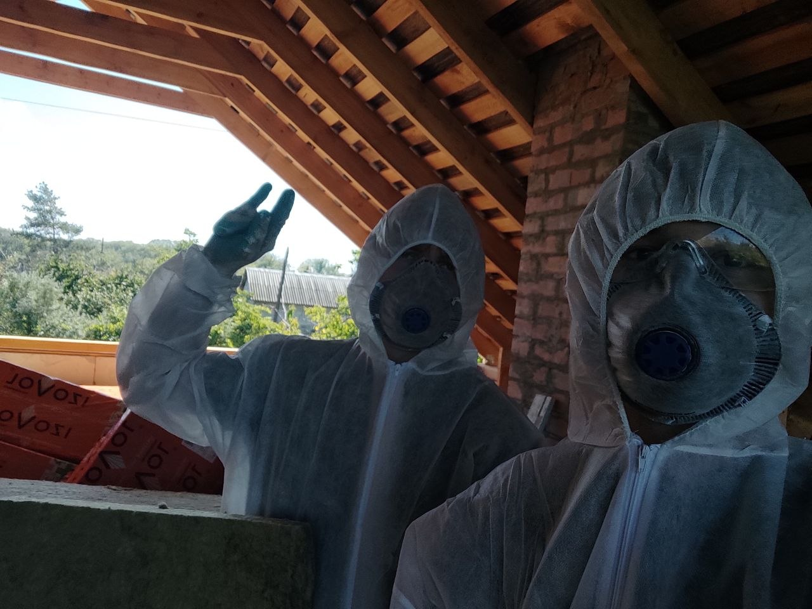

О разработчике

Уманцев Давид Артемович
Студент направления «Информатика и вычислительная техника». Интересуюсь программированием, компьютерными технологиями и веб-разработкой.
Данный сайт разработан криво-косо, но с душой :)
Профессиональные навыки
Об учебном проекте
Чему то научиться
Выполнение лабораторной работы: